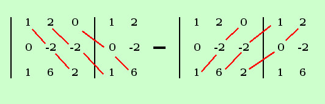

|
sviluppo Dato il seguente determinante calcolarne il valore, ove possibile, con la regola di Sarrus
Aggiungiamo le due colonne e poi facciamo i calcoli (stavolta saltiamo i conti con gli zeri)  D = 1·(-2)·2 + 2·(-2)·1 + 0 - 0 - 6·(-2)·1 - 0 = -4 - 4 + 12 = 4 |